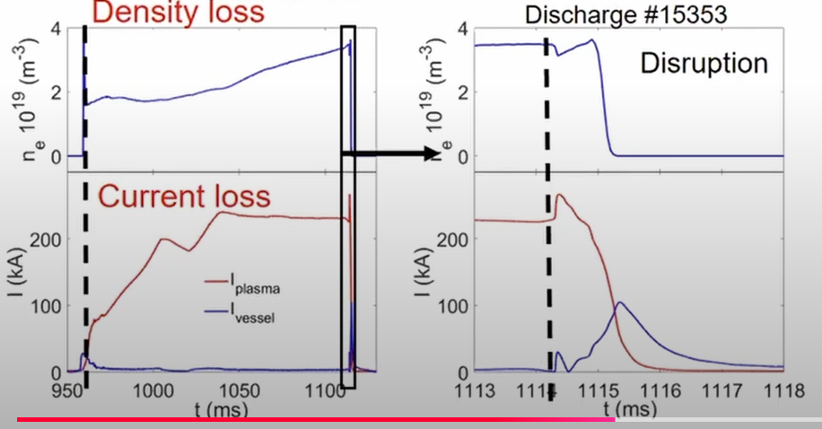

Basic concepts#
Fusion reactions require temperatures of 50-150 millions degree celsius temperature. No material can withstand direct contact with plasma at these temperatures without melting or vaporizing. Even the most heat-resistant materials, like tungsten, would fail almost instantly. Magnetic confinement allows containing the plasma without direct contact with a solid body. This is possible because plasma is an ionized gas, and therefore it is affected by magnetic fields.
Stages in disruption#
Stage 1: Plasma breakdown. The deuterium gas is ionised and a small plasma current begins to flow.
Stage 2: Current ramp-up. The plasma current is increased, mainly by ramping flux through the central solenoid.
Stage 3: Flat top. The plasma current is held at a constant level. By this point, the plasma has reached the required size and shape.
Stage 4: Termination. Plasma confinement is lost and the discharge terminates. This may occur relatively quickly due to some large plasma instability such as a locked NTM or sawtooth crash. Alternatively, if plasma stability can be maintained, this may occur when it is no longer possible to ramp any more flux through the solenoid.
Disruption#
Videos of disruption.
Disruption is uncontrolled loss of plasma confinement. It is a very dangerous event, as it can cause damage to the reactor.
Typical Disruption#
Disruptions can be observed as follows:
Magnetic instability
Loss of plasma current
Loss of plasma density/ pressure
Loss of plasma shape or movement of plasma to the wall.
Magnetic activity#
The following plot is taken from COMPASS Tokamak, operational in 1990s in the UKAEA. The plot is called a magnetic instability spectrum. On the x-axis time is measured in milliseconds (ms), showing how the plasma behavior evolves. One the y-axis, frequency of magnetic fluctuations is shown in kilohertz (kHz), representing oscillations in the magnetic field. The Red/yellow colour denotes strong magnetic activity or instabilities. See this plot as a scatter plot with a colormap not as a standard 2D plot.

Sudden Increase in Magnetic Activity
Around 1070 ms, there is a sudden increase in the magnetic activity across multiple frequencies. This suggests the growth of unstable modes in the plasma.
After 1070 ms, the spectrum becomes chaotic, signals the breakdown of magnetic confinement
Loss of Coherence: The magnetic field can no longer maintain the plasma’s shape and position
Movement towards the wall#

This EFIT reconstruction, a reconstruction of the plasma’s magnetic equilibrium, shows signs of a plasma disruption, specifically the movement of the plasma column toward the wall. The black lines are magnetic flux surfaces, which describe the shape and position of the plasma within the reactor. Ideally, these surfaces are well-contained and concentric, staying centered in the reactor.
The blue arrows indicate the movement of the plasma as it becomes unstable and shifts toward the wall of the reactor. The evolution shows the plasma shifting and distorting, losing its confinement.
Density and plasma current loss#

The small rectangle (Lest 2 plots) is magnifying the region of disruption in the right two plots.
Plot-1 (Top left)
Y-axis: Electron density, which measures how many electrons are present in the plasma per unit volume.
X-axis: Time in milliseconds (ms)
Plot-2 (Bottom left)
Y-axis: Plasma current, which measures the flow of charged particles in the plasma.
X-axis: Time in milliseconds (ms)
Before the disruption, the electron density and plasma current is relatively stable or increasing.
After the disruption, the electron density and plasma current drop significantly, indicating a loss of particles and current in the plasma. This is because of the fact that plasma is moving out of the confinement region.
Timeline of disruption#

In the green zone, the plasma is stable and well-confined. The plasma is in a good state, with no disruptions or instabilities.
In the blue zone, certain parameters (e.g., plasma current, density, or pressure) exceed their safe operating range, causing instabilities to form.
In the Yellow Zone, the plasma rapidly loses its thermal energy, releasing it into the reactor’s walls and divertors.
In the red zone, the plasma current, which generates the confining magnetic field, drops sharply. It can cause severe mechanical and thermal stresses on the reactor.
Videos:
Key goals of disruption prediction#
The aim is to prevent and mitigate disruptions in fusion plasmas, which pose a major threat to the stability, performance, and integrity of magnetic confinement fusion devices like tokamaks. Here are some important goals which can be achieved by early and reliable prediction of plasma disruptions.
Avoidance: Take control actions, such as real time adjustment of plasma parameters to reduced the risk of disruptions. This might involve a digital twin.
Mitigation: Implement strategies to reduce the impact of disruptions, such as injecting impurities into the plasma to cool it down. Massive gas injection (MGI) is a plasma disruption mitigation technique that involves injecting large amounts of noble gases into the plasma before a disruption occurs. This helps to cool the plasma and reduce the energy released during the disruption.
Understanding Underlying Physics: : Analyse diagnostic signals to identify the physical mechanisms that lead to plasma instabilities and disruptions.
Challenges in disruption prediction#
Complexity of plasma dynamics
Plasma instabilities (e.g., MHD modes, impurity accumulation, edge cooling) evolve over space and time in a nonlinear manner.
Lack of generalised predictors
As discussed earlier, disruption mechanisms vary between devices and operational conditions.
Predictors trained on one tokamak (e.g., JET, EAST) doesn’t necessarily work on others (e.g., ITER). The diagnostic signals, plasma parameters, and disruption characteristics can be different.
Short Warning Times
Disruptions can happen within milliseconds. The mitigation system should be able to respond quickly to prevent damage to the device.
Data Imbalance
Disruptions are rare events, and the dataset is often imbalanced, with few disruptions compared to normal operation. This poses challenges for machine learning algorithms that are sensitive to class imbalance.
The ML problem#
The disruption prediction task is a time-series classification problem. The time series nature arises because plasma dynamics evolve over time, and disruptions occur due to a chain of physical events. The goal is to classify the time slices of plasma signals as:
Stable (0): Plasma behavior is normal.
Unstable (1): Plasma is in the pre-disruptive phase leading up to a disruption.
In almost all the papers, each time window (e.g., 200 ms, as in Aymerich et al.) is treated as an input to the NN. For real-time application or inference, these time slices are fed to the NN sequentially as new plasma measurements arrive.
Alarm time#
One of the important things that we need to consider is that the NN must perform faster than the actual experiment to provide a sufficient alarm time. Meaning, the inference time, i.e., the time it takes for the NN to process a time window of diagnostic data and make a prediction (e.g., “stable” or “unstable”), is faster than the actual time window. This ensures that the NN can provide an early warning before a disruption occurs. Alarm time can be defined as the moment when the NN first predicts an “unstable” condition, ideally before the actual disruption occurs.
Parameters#
For now let us stick to the basic parameters that are used in the papers. The parameters are:
Electron density \(n_e\): The number of electrons per unit volume in the plasma.
Electron temperature \(T_e\): The temperature of the electrons in the plasma.
Radiated power (bolometers) \(P_{rad}\): The power radiated by the plasma.
Internal inductance \(l_i\): A measure of the plasma’s inductance.
plasma current \(I_p\): The flow of charged particles in the plasma.